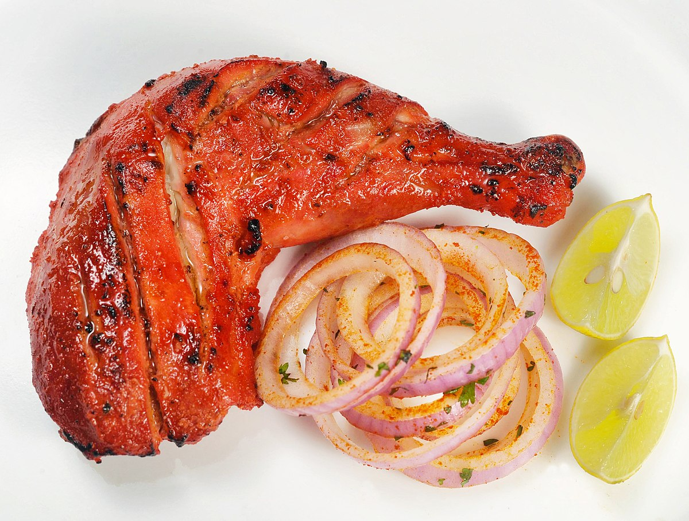

Tandoori Chicken

Description
Tandoori chicken is a chicken dish prepared by roasting chicken marinated in yogurt and spices in a tandoor, a cylindrical clay oven.
The dish originated from the Indian subcontinent and is popular in many other parts of the world.
Ingredients
- 2 pounds chicken, cut into pieces
- 1 teaspoon salt
- 1 lemon, juiced
- 1 ¼ cups plain yogurt
- ½ onion, finely chopped
- 1 clove garlic, minced
- 1 teaspoon grated fresh ginger root
- 2 teaspoons garam masala
- 1 teaspoon cayenne pepper
- 1 teaspoon yellow food coloring
- 1 teaspoon red food coloring
- 2 teaspoons finely chopped cilantro
- 1 lemon, cut into wedges
Steps
- Remove skin from chicken pieces, and cut slits into them lengthwise.
Place in a shallow dish. Sprinkle both sides of chicken with salt and lemon juice. Set aside 20 minutes.
- n a medium bowl, combine yogurt, onion, garlic, ginger, garam masala, and cayenne pepper. Mix until smooth.
Stir in yellow and red food coloring. Spread yogurt mixture over chicken. C
over, and refrigerate for 6 to 24 hours (the longer the better).
- Preheat an outdoor grill for medium high heat, and lightly oil grate.
- Cook chicken on grill until no longer pink and juices run clear. Garnish with cilantro and lemon wedges.